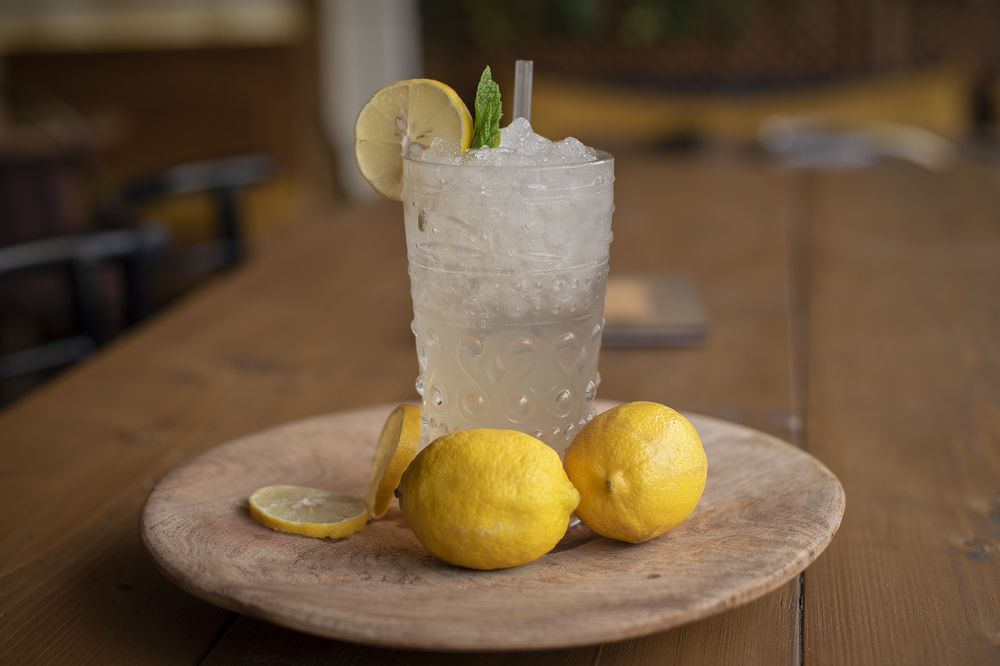

Homemade Lemonade
Home

Ingredients
serving size: 2~
- 5 yellow lemons
- ½ cup granulaed sugar
- 4 cups of cold water
- to liking: ice cubes
Assembly
- Dissolve Sugar to prevent grittiness in a small amount of hot water before mixing with cold water and lemon juice
- Squeeze lemons to gather juice (approx. 1 cup). Set aside.
- In a medium sized pitcher, combine; water, lemon juice and sugar. Mix all ingredients well until all is well combined.
- Serve in an individual glass cup. Fill with ice to liking and enjoy!
- Optional: Garnish with lemon slice and mint